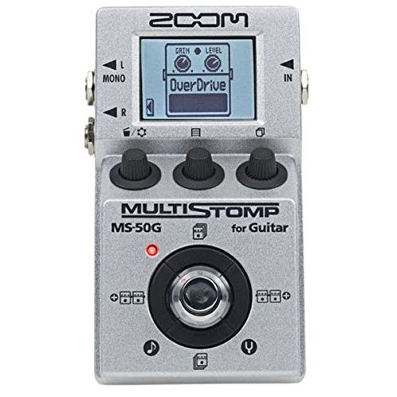

|  |
ZOOM MS-50G Multistomp Pedal Zoom's MS-50G MultiStomp guitar pedal combines the power of a multi-effects device and the flexibility of an amp modeler in a single compact stompbox. With its 55 custom guitar effects and amp models, an easy-to-use interface, onboard chromatic tuner and versatile power options, you'll be surprised at how much the MS-50G has to offer. |